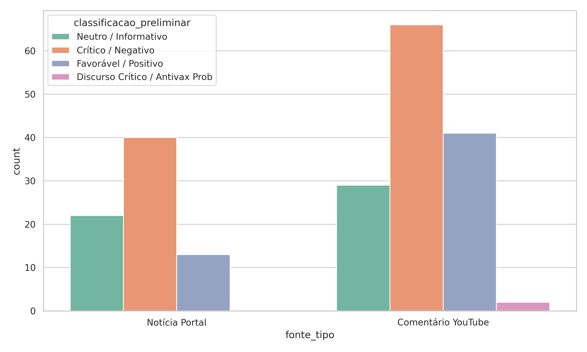
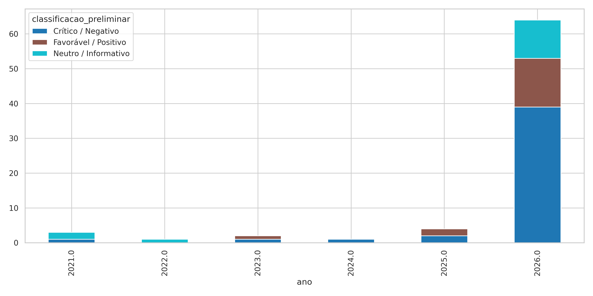
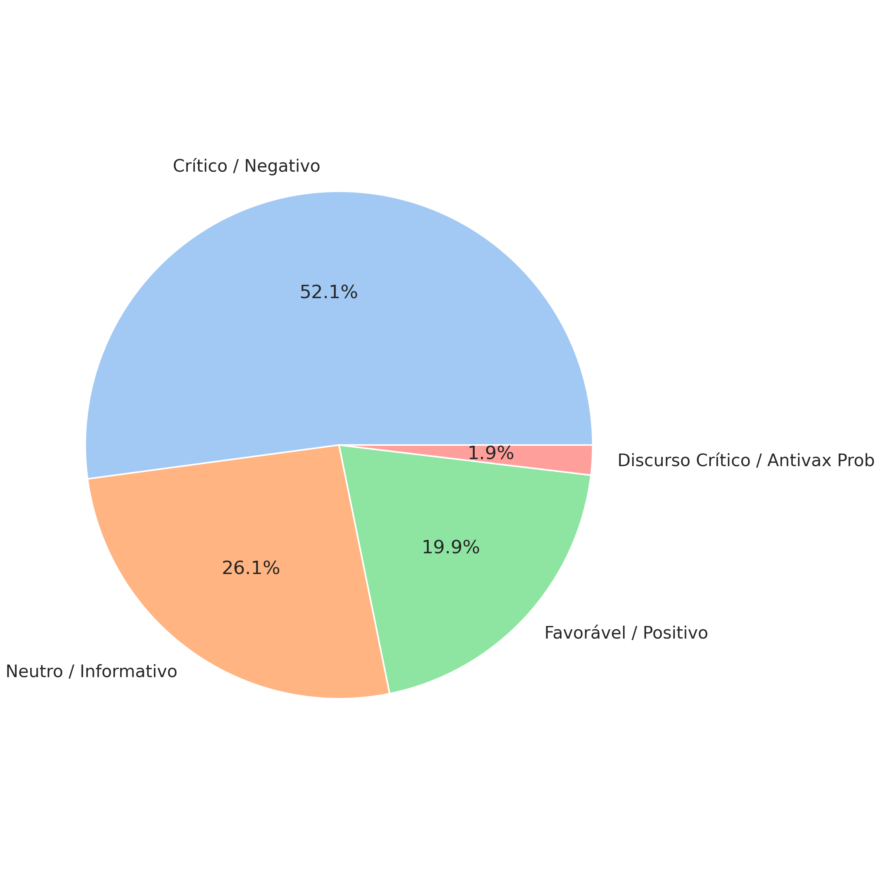

Resumo temporariamente indisponível devido a alta demanda no servidor.
Resumo temporariamente indisponível devido a alta demanda no servidor.



Idosos com 85 anos ou mais podem receber vacina que protege contra pneumonia e meningite em Teresina - G1
Montes Claros intensifica a vacinação antirrábica de animais de rua - G1
Cuiabá mantém vacina tríplice viral nas 72 USFs e reforça importância da proteção contra o sarampo - Prefeitura de Cuiabá
Paulista promove vacinação antirrábica e amplia proteção de cães e gatos - Paulista-PE
Nos EUA, surto de sarampo em comunidades amish faz famílias repensarem vacinação - Folha de S.Paulo
Idosos dão exemplo e recebem vacina Pneumo-20 em unidade de saúde de Curitiba - Prefeitura de Curitiba
SUS disponibiliza nova vacina pneumo 20 contra pneumonia e meningite - Terra
Quem já iniciou a vida sexual pode tomar a vacina contra HPV? Confira quando ela pode ser indicada - O POVO
Vacina contra HPV está disponível em todas as UBS de São José dos Pinhais - Prefeitura de São José dos Pinhais - PR
Saiba como acessar a carteira de vacinação pelo Meu SUS Digital - Infonet
Maceió amplia vacinação contra HPV para crianças vítimas de violência sexual a partir dos 2 anos de idade - Prefeitura de Maceió
Vacinação antirrábica é reforçada no Mondubim após cão ir a óbito por raiva - O POVO
Vacina contra HPV é indicada para crianças a partir dos 2 anos vítima de violência sexual - G1
VSR: processo de produção de vacina no Brasil já começou, com transferência de tecnologia para o Instituto Butantan; entenda - O GLOBO
Brasil intensifica ações contra o sarampo diante de surto nos EUA e avanço da doença nas Américas - Governo Federal
Vacina no shopping: ação em Guarujá oferece doses contra gripe e Covid no sábado - Costa Norte
Nova York declara estado de emergência por surto de sarampo - Agência Brasil
Vacina antirrábica é principal proteção de cães e gatos contra a raiva – CGNotícias - Prefeitura de Campo Grande
SP confirma 41 casos de sarampo; 75% dos infectados não se vacinaram - CNN Brasil
Vacina Pneumo20 passa a ser oferecida para idosos de 85 anos ou mais em Teresina - Portal Piauí Hoje